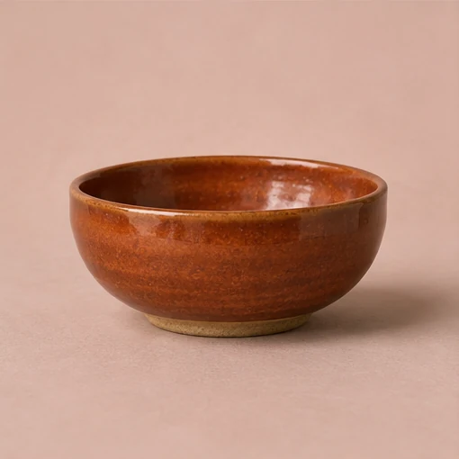
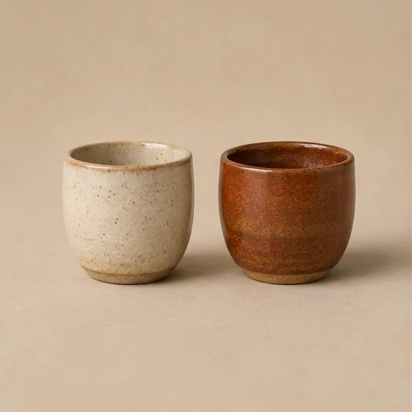

Кружки и чашки
Кружка «Овёс»
Тёплая песочная глазурь и широкая ручка. 320 мл.
1 590 ₽
Подробнее о товаре Кружка «Овёс»
Кружки для утра, посуда для стола и керамика для дома.
Кружки и чашки
Тёплая песочная глазурь и широкая ручка. 320 мл.

Для стола
Глубокая пиала с терракотовой глазурью. 450 мл.

Для стола
Матовая тарелка с высоким бортиком. 21 см.
 Новинка
Новинка
Вазы и кувшины
Молочная ваза для нескольких стеблей. 19 см.

Вазы и кувшины
Тёмно-синий кувшин с удобным носиком. 680 мл.

2 предметаКружки и чашки
Две чашки для эспрессо. По 110 мл.